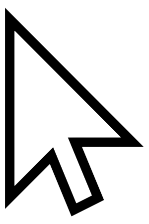
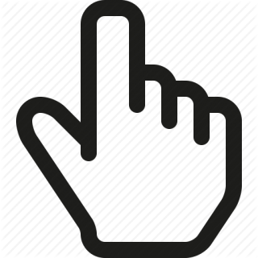

Bienvenue! Ici, vous allez apprendre à interagir avec votre ordinateur
Quand on parle d'ordinateurs, la souris est un petit icône sur l'écran, que vous pouvez déplacer pour montrer à l'ordinateur ce qui vous intéresse.
La souris peut avoir plusieurs formes.
le plus souvent elle ressemblera à ca:

Mais elle peut ressembler à ca:

et plein d'autres formes encore!
en ce moment, votre souris est là bas pouvez vous la voir ?
Maintenant, nous allons apprendre à la déplacer